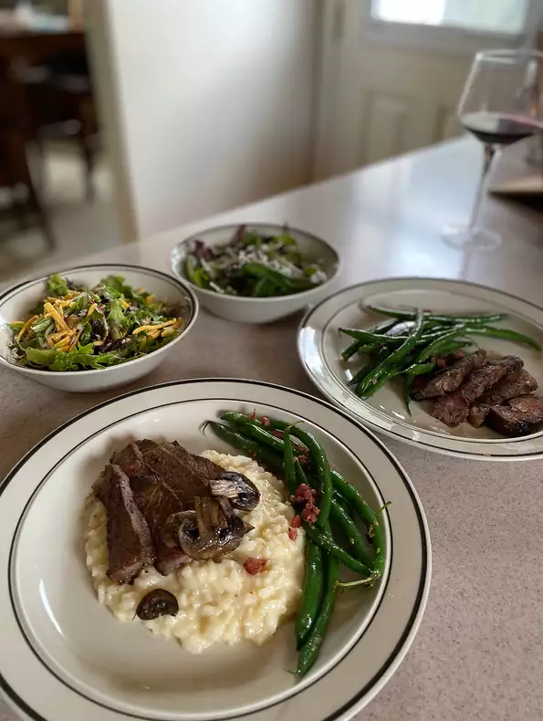

Odin's Recipes
Odin's Beer Steak

Thor's favorite childhood dish
Ingredients
4 (1/2 pound) rib-eye steaks, or steak of choice
2 tablespoons sea salt
2 tablespoons lemon pepper
2 (12 fluid ounce) cans or bottles beer of choice